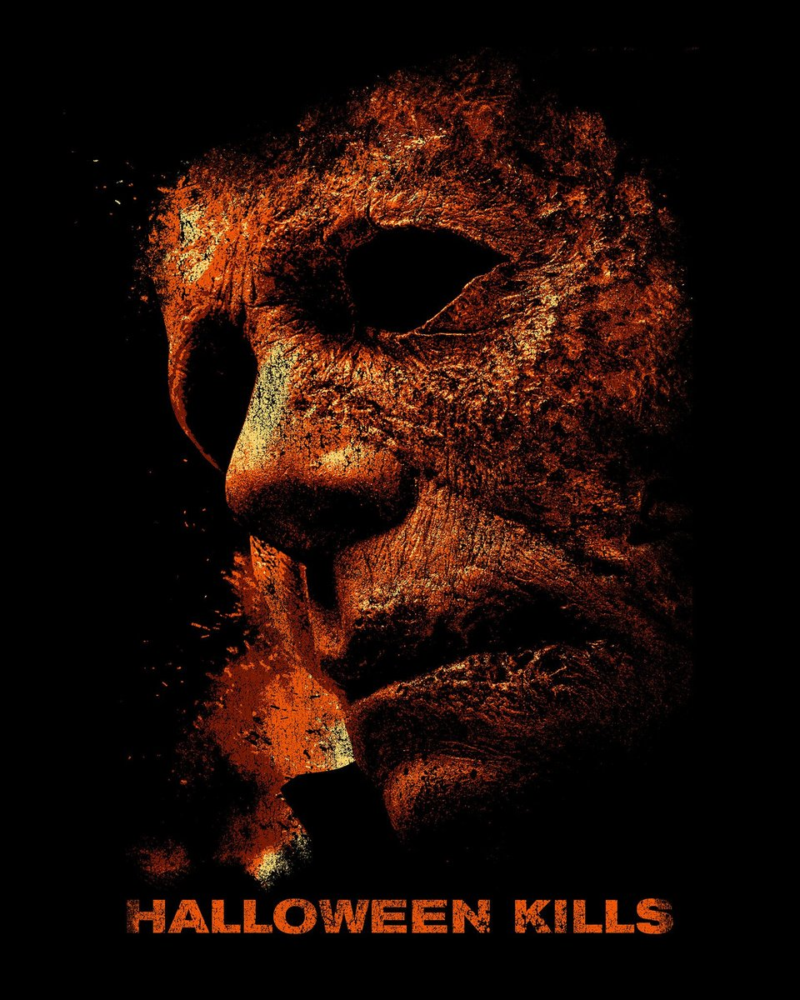

Halloween Kills

Halloween Kills is most likely going to be another film that divides the horror community, some will love it with all of its quirks, while others will hate it's addition onto the Halloweens franchise. For me personally, I can see either side of the arguments. There were definitely some points in the film I didn't like or really enjoy, but there were also some things that I did really enjoy and thought were super cool to include.
One thing I thoroughly enjoyed, was that they very consciously included the three ICONIC masks from Halloween 3: Season Of The Witch. Which again some people, like myself, will thoroughly enjoy that, while others will hate the slightest mention of that film.
As a whole, I would say that Kills is not a terrible film, or even the worst in the long running franchise (now out of 12 films), but I would definitely say that it doesn't slay the other films either. The premise around this film sounds alright, I mean we get our favorite Final Girl back, well sort of, considering she actually isn't in it all that much. And I would imagine any hardcore fan would probably be fairly upset about that move, since most people were probably hoping to see Laurie in some more action. The only idea I have is that maybe they saved her screen time, so when we get our final film in this new sort of trilogy, we get Laurie in full glory. I mean we can hope that is the case, but in any case, Laurie's absence is most certainly missed.
I think I can safely say that I was sad Laurie wasn't as active in this film. She is definitely one of my favorite Final Girls and just a favorite actress as well. I just can't see why they thought having her not know Michael wasn't dead for a good portion of the film was a good idea. The other thing I don't quite understand, is the fact the entire film we here the whole, "Evil dies tonight" thing, where we are supposed to return to feeling like Michael is resilient but still killable. When in reality, I was left feeling the opposite. I mean there is an entire scene where the Haddonfield residents are beating on Michael, and yet he still doesn't really go down for the count. He still comes back, as he always has. And now I understand that we still have a final film to watch/happen. But what was the point in trying to make us feel like this was a possible scenario, only to have that rug ripped from under us.
I suppose we will have to wait for Halloween Ends, and hope that all our questions are answered then.